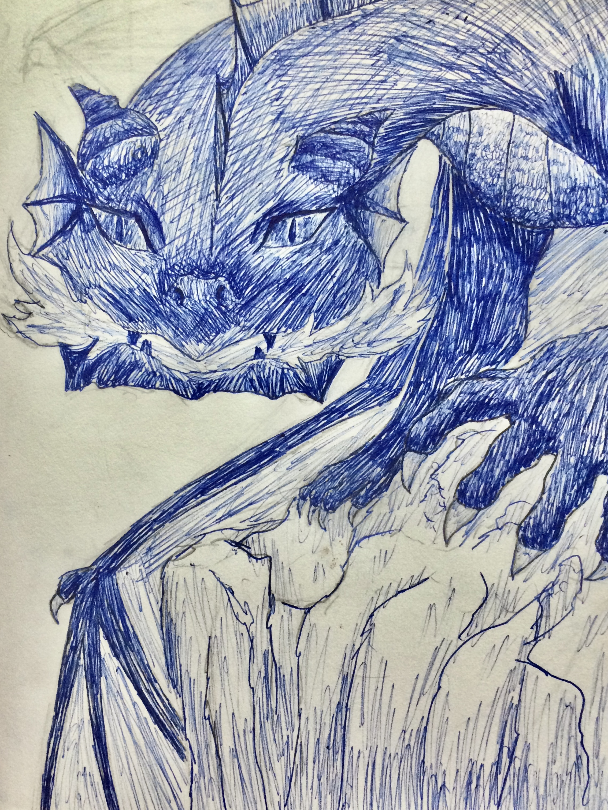

|  |
Date: April 2020
Medium: Blue-inked pen
A handrawn replication of a dragon from graphic of a D&D set. The original graphic was green and lacked eyes, but other than that, I tried my best to mimic it. I made sure to pay close attantion to the shadows and its anatomy to make it as realistic as I could in a short time.
|